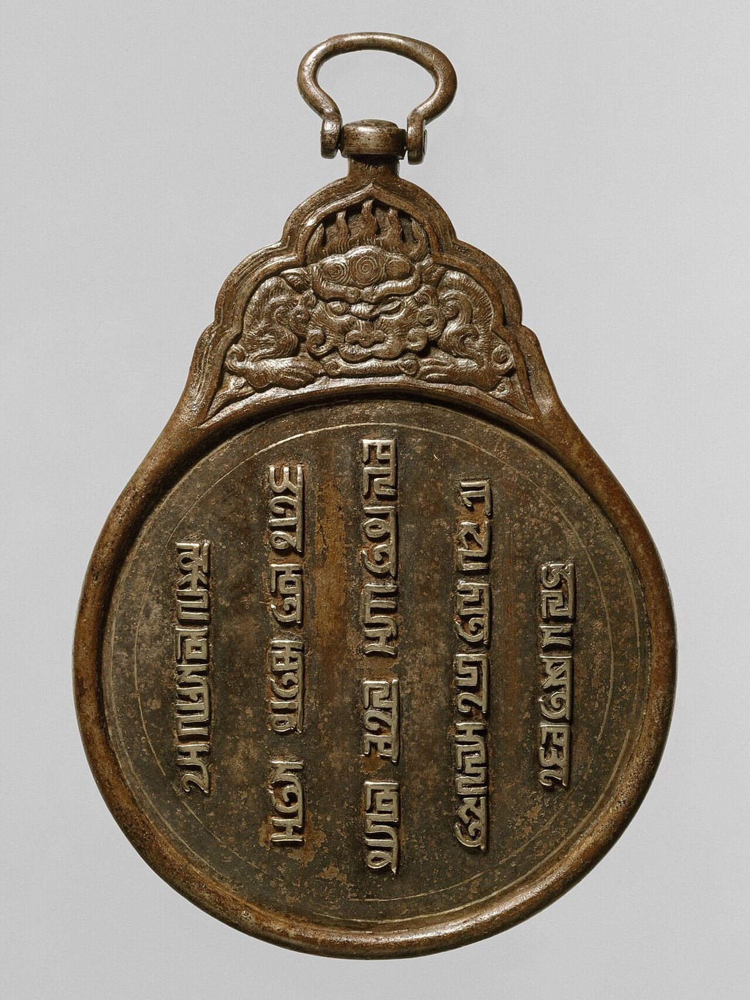
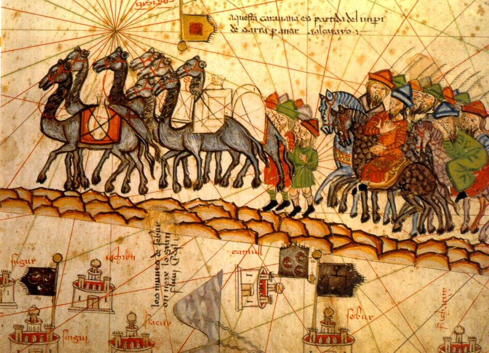
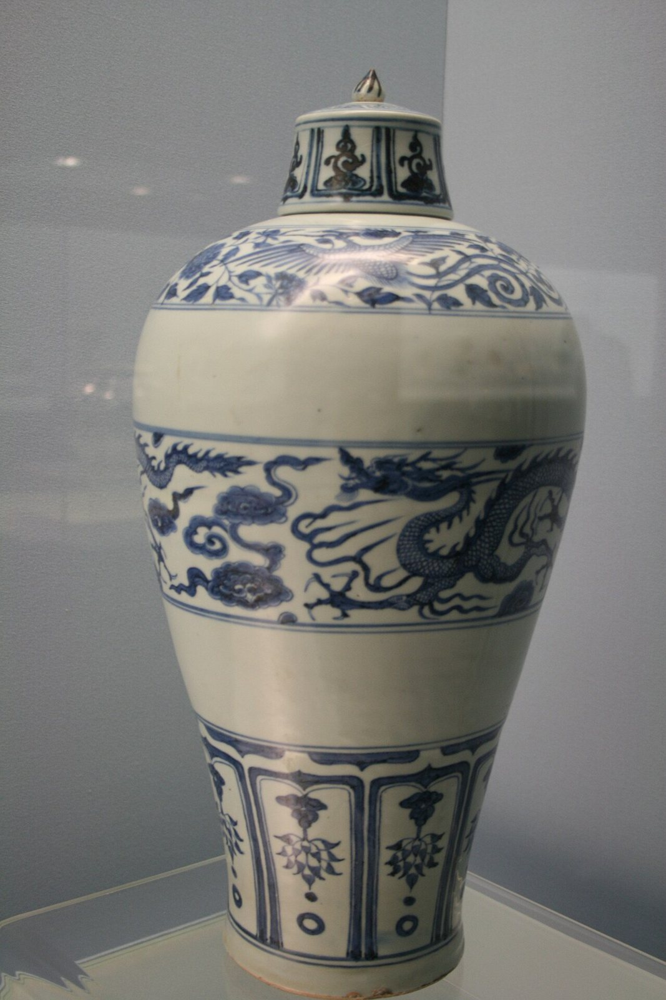

사진 · 파스파 문자가 새겨진 원의 통행패
중학교 역사① · 4단원 지역 세계의 교류와 변화
패자몽골 제국과 유라시아·인도양 교역
파스파 문자 통행패(원, 13세기 말) · 메트로폴리탄 미술관 · CC0
“몽골 제국은 유라시아를
몽골 제국은 유라시아를
어떻게 하나로 이었을까?
사실역참 · 패자 · 바닷길
해석정복과 교류는 함께 갔을까
확장이어진 세계가 함께 나눈 것
1206
사실테무친이 칭기즈 칸이 되다
해석천호제로 유목 부족을 묶다
확장반세기 만에 유라시아로
나뉘어도 이어진 제국
원중국 · 몽골 고원
킵차크 칸국러시아 초원
일 칸국서아시아
차가타이 칸국중앙아시아
사진 · 패자 하나로
어디까지 갈 수 있었을까?
패자 하나로
어디까지 갈 수 있었을까?
사실역참(잠치)
해석말을 갈아타며 달리기
확장공문서 · 사신 · 상인
파스파 문자 통행패(원, 13세기 말) · 메트로폴리탄 미술관 · CC0

사진 · 이 대상(캐러밴)은
어디로 가고 있을까?
이 대상(캐러밴)은
어디로 가고 있을까?
누가마요르카의 지도 제작자
언제1375년
사실·주장마르코 폴로 일행이라는 해석
아브라함 크레스케스, 『카탈루냐 지도』 대상 행렬(1375) · 퍼블릭 도메인
몽골인 · 색목인
한인 · 남인
사실원의 사람 구분
해석소수의 몽골인이 다수를 다스리는 방법
확장얼마나 엄격했을까

사진 · 이 파란색은
어디에서 왔을까?
이 파란색은
어디에서 왔을까?
사실원의 청화 백자
해석서아시아의 코발트 + 징더전의 흙
확장이슬람 세계로 팔려 가다
원 청화 백자 매병(징더전) · 사진 Gary Lee Todd · CC0
이븐 바투타
사실1325년 모로코에서 출발
해석약 30년 동안 이슬람 세계를 여행
확장중국까지 정말 갔을까
인도양의 바닷길
취안저우중국의 큰 항구
믈라카 해협동남아시아
캘리컷인도 남서부
호르무즈페르시아만
이어진 길로
무엇이 함께 왔을까?
사실14세기 중엽 흑사병
해석교역로를 따라 퍼진 병
확장연결의 두 얼굴
“몽골 제국이 유라시아를 하나로 이은 힘은 이었다.